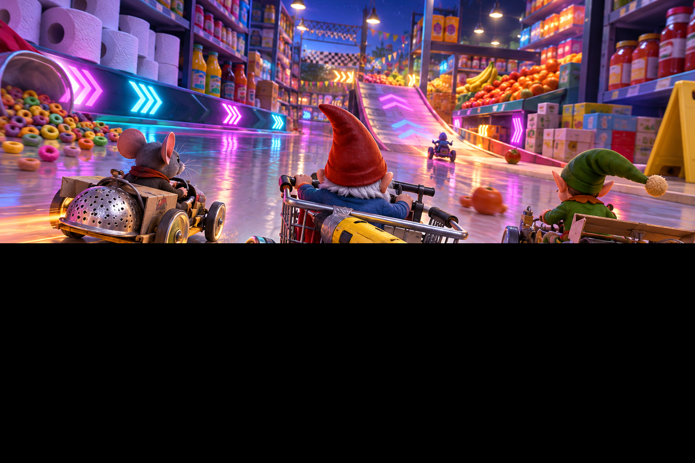
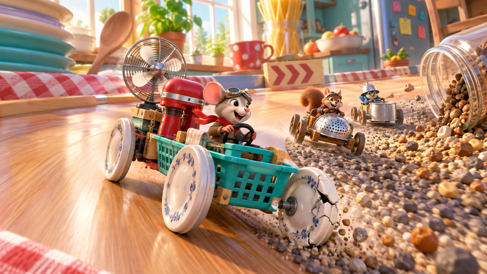

Кухонный спринт
Художественный образец первых 100 единиц новой трассы. Дальше сохранена техническая основа разработчика.
Заезд: 80.93 с, эвакуаций 0. Обычная камера и существующий QA-автопилот: руль, тормоз и физическая тяга, без переноса машины и ускорения времени. Художественное утверждение участка остаётся за пользователем.
Полный работающий заезд
До / после — одинаковая игровая камера
Переход, середина и конец маршрута
Телефон — исходные PNG 1688×780
Референсы

Композиция: дорога вперёд, границы и боковые ориентиры. Нижняя часть исходного PNG повреждена.
Материалы и цвет: дерево, эмаль, латунь, клетчатая ткань, крупная посуда.Отличия: меньше мелких бытовых деталей и износа, простое освещение без GI, стилизованные плоские дальние окна. Посадка героя и вся машина сохраняют принятые физические точки и пока отличаются от референса. Стиль ещё не распространён на всю трассу.
Техническая проверка
Коллайдеры, размеры, камера, управление, физика, звук и правила не изменены. Тест сравнивает позиции и индексы дорожной геометрии до/после оформления. Декор находится за |X−c(Z)| ≥ 7,6; нижняя точка балок ≥ 9,825. Физическая высота экрана — прежние 5 единиц. Боковые и воздушные удары, груз и скользящий контакт проверены; скрытого сброса скорости или телепортации нет. ИИ и все 42 последовательных checkpoints работают на новой трассе.
| Версия | Viewport | p50 / p95 кадра | WebGL buffer |
|---|
| before | desktop | 33.4 / 83.3 мс | 1280×742 |
| before | mobile | 33.4 / 66.7 мс | 1266×522 |
| after | desktop | 33.3 / 33.4 мс | 1280×742 |
| after | mobile | 33.4 / 83.3 мс | 1266×522 |
Windows / Intel HD620 / Chromium D3D11, один проход участка на профиль. Лимит приложения 30 FPS. Это наблюдение, не изолированный GPU benchmark; запись видео может влиять на desktop. Телефон эмулирует viewport, не оборудование.
Снятая локальная версия: vs-2026-09-14T04:43:32.700Z. Публичная версия: см. version.json.